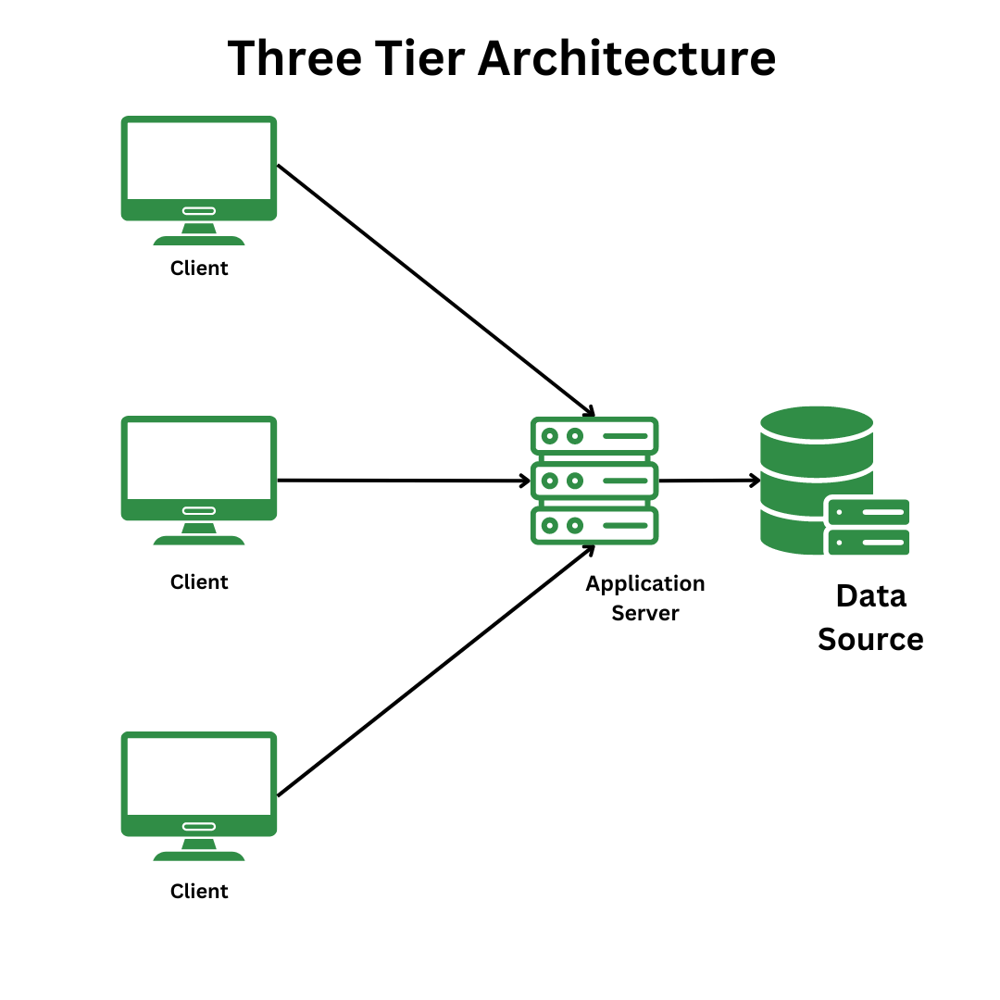

Chapter 1: Foundations of Database Systems
1.1 Introduction to Data and Information
Data
Definition: Raw, unprocessed facts, figures, or symbols that have no inherent meaning. Data can be numerical, textual, or multimedia.
Long Definition: Data represents the basic building blocks of information. It is collected observations or measurements of the world around us, stored in a format suitable for processing.
Examples:
- A student's name: "Alice Smith" (textual)
- A product's price: 29.99 (numerical)
- A digital photograph (multimedia)

Data
Information
Definition: Processed, organized, and structured data that provides context and meaning. Information is data that has been made useful.
Long Definition: Information is derived from data through analysis, interpretation, and organization. It transforms raw data into a form that is understandable and useful for decision-making.
Examples:
- A student's grade report, showing their performance in different subjects.
- A sales report, summarizing the total revenue generated by a company.
- A weather forecast, predicting future weather conditions.
information
The Importance of Organized Data
- Efficient retrieval: Allows for quick and easy access to specific information.
- Data integrity: Structure and rules help maintain data accuracy and consistency.
- Data analysis: Organized data is essential for extracting meaningful insights and patterns.
- Decision-making: Reliable information derived from organized data supports informed decision-making.
Example: Imagine a library where books are piled randomly versus a library with a catalog and organized shelves. The organized library is much more efficient.
1.2 Database Concepts
Definition of a Database
Definition: A structured collection of related data that is stored and managed in a way that allows for efficient retrieval, modification, and deletion.
Long Definition: A database is an organized repositoryand managed in a way that allows for efficient retrieval, modification, and deletion.
Long Definition: A database is an organized repository of data that provides a centralized and controlled environment for storing and managing information. It is designed to ensure data integrity, security, and accessibility.
Database Concept Diagram
Types of Databases
Relational Databases (RDBMS)
Data is organized into tables with rows and columns. Relationships between tables are established using keys. Examples: MySQL, PostgreSQL, Oracle, SQL Server.
NoSQL Databases
Designed for handling large volumes of unstructured or semi-structured data. Various models:
- Key-Value Stores: Data stored as key-value pairs. Examples: Redis, DynamoDB.
- Document-Oriented: Stores semi-structured data in JSON-like documents. Examples: MongoDB, CouchDB.
- Column-Family: Optimized for large-scale distributed storage. Examples: Cassandra, HBase.
- Graph Databases: Data stored as nodes and edges for complex relationships. Examples: Neo4j, ArangoDB.
RDBMS vs NoSQL Chart
Database Management Systems (DBMS)
Definition: Software that allows users to create, manage, and access databases.
Long Definition: A DBMS provides an interface between users and the database, handling tasks such as data storage, retrieval, security, and concurrency control. Examples: MySQL, PostgreSQL, Oracle, SQL Server, MongoDB.

DBMS Layer Diagram
1.3 Relational Database Model
Tables, Rows, Columns
Table: A collection of related data organized into rows and columns.
Row (Tuple/Record): A horizontal set of data representing a single entity.
Column (Attribute/Field): A vertical set of data representing a specific characteristic of the entity.
Example: A "Students" table with columns like "StudentID," "Name," and "Major," and rows representing individual students.
Table Rows Columns
Primary Keys, Foreign Keys, and Relationships
Primary Key: A unique identifier for each row in a table. It ensures that each record in the table is unique and cannot be null. Example: StudentID in the "Students" table.
Foreign Key: A column in one table that references the primary key of another table, establishing a relationship between the two tables. It ensures referential integrity. Example: A "Courses" table with a StudentID foreign key referencing the StudentID primary key in the "Students" table.
Candidate Key: A column or set of columns that can uniquely identify a row in a table. A table can have multiple candidate keys, but only one becomes the primary key. Example: In a "Students" table, both StudentID and Email could be candidate keys.
Super Key: A set of columns that can uniquely identify a row in a table. It may include additional columns that are not strictly necessary for uniqueness. Example: In a "Students" table, StudentID + Name could form a super key.
Composite Key: A primary key that consists of two or more columns to uniquely identify a row. Example: In an "Orders" table, OrderID + ProductID could form a composite key.
Alternate Key: A candidate key that is not chosen as the primary key. It still uniquely identifies a row but is not the main identifier. Example: In a "Students" table, if StudentID is the primary key, Email could be an alternate key.
Unique Key: A column or set of columns that ensures all values are unique, but unlike a primary key, it can contain null values. Example: In a "Users" table, Username could be a unique key.
Relationships: Defines how tables are connected to each other. Common types include:
- One-to-One: Each record in Table A relates to exactly one record in Table B, and vice versa. Example: A "Students" table and a "StudentDetails" table where each student has only one set of details.
- One-to-Many: A record in Table A can relate to multiple records in Table B, but a record in Table B relates to only one record in Table A. Example: A "Students" table and a "Courses" table where one student can enroll in many courses, but each course belongs to only one student.
- Many-to-One: Multiple records in Table A relate to a single record in Table B. This is the inverse of one-to-many. Example: A "Courses" table and a "Students" table where many courses can be taught by a single student.
- Many-to-Many: Records in Table A can relate to multiple records in Table B, and vice versa. This requires a junction table. Example: A "Students" table and a "Courses" table where students can enroll in multiple courses, and courses can have multiple students. A junction table like "StudentCourses" is used to manage this relationship.
KEY TYPES
Database Normalization (Brief Introduction)
Definition: The process of organizing data in a database to reduce redundancy and improve data integrity.
Normal Forms:
- 1NF (First Normal Form): Ensures each column contains atomic (indivisible) values and each row is unique.
- 2NF (Second Normal Form): Achieves 1NF and removes partial dependencies (all non-key attributes depend on the entire primary key).
- 3NF (Third Normal Form): Achieves 2NF and removes transitive dependencies (non-key attributes depend only on the primary key).
Example: Breaking down a single table with redundant data (e.g., student and course information) into multiple related tables (e.g., "Students," "Courses," and "Enrollments").
Normalization Diagram
1.4 Introduction to SQL
History and Purpose of SQL
SQL (Structured Query Language), the standard language for managing relational databases, was developed in the early 1970s by IBM researchers Donald D. Chamberlin and Raymond F. Boyce. Here's a more detailed look at its history: Foundation: The development of SQL stemmed from the relational model of data proposed by Edgar F. Codd. Initial Name: The language was initially called "SEQUEL" (Structured English QUERY Language) before being shortened to SQL. IBM's Role: Chamberlin and Boyce, working at IBM, developed SQL as a way to interact with relational databases. Commercialization: In the late 1970s, Relational Software Inc. (now Oracle) introduced the first commercially available implementation of SQL, Oracle V2. Standardization: The American National Standards Institute (ANSI) and the International Organization for Standardization (ISO) adopted SQL standards in 1986 and 1987, respectively. IBM System R: The original version of SQL was designed to manipulate and retrieve data stored in IBM's quasi-relational database management system, System R. Standard language for interacting with relational databases. Used for data retrieval, manipulation, and definition.
SQL Standards (ANSI SQL)
ANSI (American National Standards Institute) defines standards for SQL. Ensures portability and compatibility across different DBMSs.
Overview of SQL Commands (DDL, DML, DCL, TCL)
DDL (Data Definition Language): Defines the structure of the database (e.g., CREATE, ALTER, DROP).
DML (Data Manipulation Language): Manipulates data within the database (e.g., SELECT, INSERT, UPDATE, DELETE).
DCL (Data Control Language): Controls access to the database (e.g., GRANT, REVOKE).
TCL (Transaction Control Language): Manages transactions (e.g., COMMIT, ROLLBACK).
Example:
DDL: CREATE TABLE Students (StudentID INT PRIMARY KEY, Name VARCHAR(255));
DML: SELECT * FROM Students WHERE Name = 'Alice';
DCL: GRANT SELECT ON Students TO user1;
TCL: BEGIN TRANSACTION; INSERT INTO Students (StudentID, name) values (1,'bob'); COMMIT;1.5 Setting Up Your SQL Environment
Choosing a DBMS
Factors to consider: features, performance, scalability, cost. Popular options: MySQL, PostgreSQL, SQL Server, SQLite.
Installation and Basic Configuration
Download and install the chosen DBMS. Configure settings such as port numbers and security options.
Introduction to Database Clients
Graphical user interfaces (GUIs): pgAdmin (PostgreSQL), MySQL Workbench (MySQL), SQL Server Management Studio (SQL Server).
Command Line Interfaces: Using the command line to interact with the database. Example: mysql command line client.
Database Client Screenshots
Chapter 2: Database Architecture and Models
2.1 Database Architecture
Definition
Database architecture refers to the overall design, structure, and organization of a database system. It defines how data is stored, processed, managed, and accessed by users and applications. A well-defined architecture ensures efficiency, scalability, and security in database management.
Types of Database Architecture
1. Single-Tier Architecture
In a single-tier (or monolithic) architecture, the database and application reside on the same system. Users directly interact with the database without an intermediate server. Suitable for personal or small-scale applications but not ideal for large-scale systems due to performance limitations.
Example: MS Access, SQLite
2. Two-Tier Architecture (Client-Server Model)
The client directly communicates with the database server, sending queries and receiving results. The database is hosted on a central server, while the client runs the application that interacts with it. Enhances performance and security compared to single-tier systems.
Example: MySQL with a client application like PHP or Java

Two-Tier Architecture Diagram
3. Three-Tier Architecture
Introduces an intermediate application server between the client and the database. Clients interact with the application server, which processes requests before querying the database. Improves security, scalability, and flexibility as business logic is separated from data storage.
Example: A web application using a browser (client), a web server (middle tier), and a database server (backend).
Three-Tier Architecture Diagram
2.2 Database Models
Definition
A database model defines how data is structured, stored, and manipulated within a database system. It provides rules and guidelines for organizing data efficiently.
Types of Database Models
1. Hierarchical Model
Organizes data in a tree-like structure with parent-child relationships. Each parent node can have multiple child nodes, but each child has only one parent. Efficient for applications requiring a well-defined hierarchy but lacks flexibility for complex relationships.
Example: IBM Information Management System (IMS)
Hierarchical Model Diagram
2. Network Model
More flexible than the hierarchical model, allowing multiple parent-child relationships. Uses graph structures with records as nodes and relationships as edges. Supports many-to-many relationships, making it suitable for complex applications.
Example: Integrated Data Store (IDS)

Network Model Diagram
3. Relational Model (RDBMS)
Organizes data into tables (relations) with rows and columns. Uses primary and foreign keys to establish relationships between tables. Based on mathematical set theory and is widely used in modern databases.
Examples: MySQL, PostgreSQL, Oracle, SQL Server

Relational Model Diagram
4. Object-Oriented Model
Stores data as objects, similar to object-oriented programming. Objects contain both data and methods to manipulate that data. Used in applications requiring complex data structures and inheritance.
Example: ObjectDB, db4o
Object-Oriented Model Diagram
5. NoSQL Databases
Designed for handling large-scale, unstructured, or semi-structured data. Uses various models such as document, key-value, column-family, and graph databases. Provides high scalability, flexibility, and speed compared to traditional RDBMS.
Examples: MongoDB (Document), Redis (Key-Value), Cassandra (Column-Family), Neo4j (Graph)

NoSQL Models Diagram
2.3 Comparison of Database Models
| Feature | Hierarchical | Network | Relational (RDBMS) | Object-Oriented | NoSQL |
|---|---|---|---|---|---|
| Structure | Tree-based | Graph-based | Table-based | Object-based | Varies |
| Relationships | One-to-Many | Many-to-Many | Many-to-Many | Object Links | Flexible |
| Flexibility | Low | Medium | High | High | Very High |
| Query Language | Proprietary | Proprietary | SQL | OQL | Varies |
| Use Cases | File Systems | Telecom Networks | Business Applications | CAD, AI | Big Data, Real-time Apps |
2.4 Database Storage and Indexing
Storage Mechanisms
- Primary Storage: RAM, cache memory for temporary data processing.
- Secondary Storage: Hard disks, SSDs for permanent storage.
- Tertiary Storage: Magnetic tapes, optical disks for archival data.

Indexing in Databases
Definition: Indexing improves data retrieval speed by creating an internal structure that maps data locations efficiently.
Types of Indexing:
- Primary Index: Built on the primary key.
- Secondary Index: Built on non-primary key attributes for faster search.
- Clustered Index: Data is physically sorted based on the indexed column.
- Non-Clustered Index: Index and data are stored separately, requiring additional lookup steps.
Example: A book index helping readers quickly find topics.
Indexing Diagram
Chapter 3: Structured Query Language (SQL)
3.1 Introduction to SQL
Definition
SQL (Structured Query Language) is a standardized programming language used to manage, manipulate, and retrieve data in relational databases.
Features of SQL
- Easy to learn and use.
- Allows efficient data retrieval and manipulation.
- Supports database transactions, security, and access control.
- Compatible with various RDBMS like MySQL, PostgreSQL, Oracle, and SQL Server.
Types of SQL Commands
SQL commands are categorized into five types:
- DDL (Data Definition Language): Defines database structures.
- DML (Data Manipulation Language): Handles data retrieval and modification.
- DCL (Data Control Language): Manages user permissions.
- TCL (Transaction Control Language): Manages transactions.
- DQL (Data Query Language): Retrieves data from databases.
3.2 Data Definition Language (DDL)
DDL commands define and modify database structures.
| Command | Description | Example |
|---|---|---|
| CREATE | Creates a new database object (table, index, etc.). | CREATE TABLE Students (ID INT PRIMARY KEY, Name VARCHAR(50)); |
| ALTER | Modifies an existing database object. | ALTER TABLE Students ADD Age INT; |
| DROP | Deletes a database object permanently. | DROP TABLE Students; |
| TRUNCATE | Removes all records from a table but keeps the structure. | TRUNCATE TABLE Students; |
Example:
CREATE TABLE Employees (
EmpID INT PRIMARY KEY,
Name VARCHAR(100),
Salary DECIMAL(10,2)
);3.3 Data Manipulation Language (DML)
DML commands manipulate database records.
| Command | Description | Example |
|---|---|---|
| INSERT | Adds new records. | INSERT INTO Students VALUES (1, 'Alice', 20); |
| UPDATE | Modifies existing records. | UPDATE Students SET Age = 21 WHERE ID = 1; |
| DELETE | Removes records from a table. | DELETE FROM Students WHERE ID = 1; |
Example:
INSERT INTO Employees (EmpID, Name, Salary) VALUES (101, 'John Doe', 50000.00);
UPDATE Employees SET Salary = 55000.00 WHERE EmpID = 101;
DELETE FROM Employees WHERE EmpID = 101;3.4 Data Query Language (DQL)
DQL consists of the SELECT statement used for retrieving data.
Basic SELECT Statement
SELECT column1, column2 FROM TableName;Example:
SELECT Name, Age FROM Students;Using WHERE Clause
Filters records based on conditions.
SELECT * FROM Students WHERE Age > 18;Using ORDER BY Clause
Sorts results in ascending (ASC) or descending (DESC) order.
SELECT * FROM Students ORDER BY Name ASC;Using DISTINCT Clause
Retrieves unique values.
SELECT DISTINCT Major FROM Students;3.5 Data Control Language (DCL)
DCL commands manage access permissions.
| Command | Description | Example |
|---|---|---|
| GRANT | Provides specific privileges to users. | GRANT SELECT ON Students TO user1; |
| REVOKE | Removes assigned privileges. | REVOKE SELECT ON Students FROM user1; |
3.6 Transaction Control Language (TCL)
TCL commands handle database transactions.
| Command | Description | Example |
|---|---|---|
| COMMIT | Saves all changes made in a transaction. | COMMIT; |
| ROLLBACK | Undoes changes made in the current transaction. | ROLLBACK; |
| SAVEPOINT | Creates a temporary save point to rollback specific changes. | SAVEPOINT SP1; |
Example:
BEGIN TRANSACTION;
UPDATE Employees SET Salary = 60000 WHERE EmpID = 101;
SAVEPOINT sp1;
UPDATE Employees SET Salary = 65000 WHERE EmpID = 101;
ROLLBACK TO sp1;
COMMIT;3.7 SQL Joins
Joins combine records from two or more tables based on related columns.
| Join Type | Description |
|---|---|
| INNER JOIN | Returns records with matching values in both tables. |
| LEFT JOIN | Returns all records from the left table and matching records from the right table. |
| RIGHT JOIN | Returns all records from the right table and matching records from the left table. |
| FULL JOIN | Returns all records from both tables. |
Example:
SELECT Students.Name, Courses.CourseName
FROM Students
INNER JOIN Courses ON Students.StudentID = Courses.StudentID;
SQL Joins Diagram
3.8 Subqueries and Views
Subqueries
A subquery is a query inside another query.
Example:
SELECT Name FROM Students WHERE Age = (SELECT MAX(Age) FROM Students);Views
A view is a virtual table based on a query.
Example:
CREATE VIEW StudentView AS
SELECT Name, Age FROM Students WHERE Age > 18;3.9 Indexing and Performance Optimization
Indexes in SQL
Indexes improve query performance by allowing fast lookups.
Example:
CREATE INDEX idx_name ON Students(Name);Performance Optimization Tips
- Use proper indexes.
- Avoid unnecessary columns in SELECT queries.
- Normalize tables to reduce redundancy.
- Optimize joins with indexing.
- Use stored procedures for repetitive tasks.
3.10 Conclusion
- SQL is the standard language for managing relational databases.
- DDL, DML, DQL, DCL, and TCL cover different aspects of SQL operations.
- Joins, subqueries, and indexing improve data retrieval and performance.
Chapter 4: Advanced SQL and Database Security üîê
4.1 Advanced SQL Concepts
4.1.1 Stored Procedures
A stored procedure is a set of SQL statements that are stored in the database and executed as a single unit. Instead of writing and executing SQL queries manually each time, stored procedures allow users to execute pre-defined logic with a simple function call.
Features of Stored Procedures:
- Encapsulate complex logic into reusable components.
- Improve security by restricting direct access to tables.
- Enhance performance by reducing network traffic between applications and databases.
Example: Creating a Stored Procedure in MySQL
DELIMITER //
CREATE PROCEDURE GetStudentDetails (IN studentID INT)
BEGIN
SELECT * FROM Students WHERE StudentID = studentID;
END //
DELIMITER ;Executing a Stored Procedure:
CALL GetStudentDetails(101);Advantages of Stored Procedures:
- Code reusability: Reduces redundancy in writing SQL queries.
- Faster execution: Optimized execution plans improve performance.
- Security: Users execute stored procedures instead of manipulating tables directly.
4.1.2 Triggers
A trigger is a database object that automatically executes a predefined action when specific events (INSERT, UPDATE, DELETE) occur in a table.
Types of Triggers:
- Before Triggers: Executed before the operation (INSERT, UPDATE, DELETE).
- After Triggers: Executed after the operation.
- Instead of Triggers: Used in views to replace standard operations.
Example: Creating a Trigger to Log Insertions in an Employee Table
CREATE TRIGGER after_employee_insert
AFTER INSERT ON Employees
FOR EACH ROW
INSERT INTO EmployeeLog (EmployeeID, Action, Timestamp)
VALUES (NEW.EmployeeID, 'INSERT', NOW());Advantages of Triggers:
- Automates database auditing and logging.
- Enforces business rules and data validation.
- Helps maintain referential integrity between tables.
4.1.3 Views
A view is a virtual table that represents the result of a SQL query. It allows users to access specific columns or rows without modifying the actual database tables.
Example: Creating a View for Active Students
CREATE VIEW ActiveStudents AS
SELECT StudentID, Name, EnrollmentDate
FROM Students
WHERE Status = 'Active';Advantages of Views:
- Data security: Restricts access to specific data.
- Simplifies queries: Provides pre-filtered data for easy retrieval.
- Data abstraction: Hides the complexity of joins and aggregations.

4.2 Advanced Query Optimization
4.2.1 Indexing for Performance
Indexes enhance database performance by allowing quick lookups of rows based on specific columns.
Example: Creating an Index on a Student Name Column
CREATE INDEX idx_student_name ON Students(Name);Checking an Execution Plan for Query Optimization
EXPLAIN SELECT * FROM Students WHERE Name = 'Alice';Best Practices:
- Use indexes on frequently searched columns.
- Avoid excessive indexing, as it increases storage requirements.
- Use clustered indexes for primary keys.
4.2.2 Partitioning for Large Datasets
Partitioning helps in managing large tables by dividing data into smaller, manageable parts.
Example: Range Partitioning on an Orders Table
CREATE TABLE Orders (
OrderID INT NOT NULL,
OrderDate DATE NOT NULL,
CustomerID INT NOT NULL,
PRIMARY KEY (OrderID, OrderDate)
) PARTITION BY RANGE(OrderDate) (
PARTITION p1 VALUES LESS THAN ('2023-01-01'),
PARTITION p2 VALUES LESS THAN ('2024-01-01')
);Benefits of Partitioning:
- Improves query performance by scanning smaller subsets of data.
- Enhances manageability of large tables.
- Reduces storage cost by allowing older partitions to be archived.
4.3 Database Security Best Practices
4.3.1 User Privileges and Role Management
Database security starts with proper user access control. Instead of granting full database privileges to every user, administrators can define specific roles.
Example: Creating a Role and Assigning Privileges
CREATE ROLE AdminRole;
GRANT ALL PRIVILEGES ON Students TO AdminRole;
GRANT AdminRole TO 'admin_user';4.3.2 Encryption in Databases
Encryption is a technique used to secure sensitive data by converting it into unreadable text using cryptographic algorithms.
Example: Encrypting Data in MySQL
INSERT INTO SecureData (ID, EncryptedInfo)
VALUES (1, AES_ENCRYPT('Sensitive Data', 'encryption_key'));Decrypting Data:
SELECT AES_DECRYPT(EncryptedInfo, 'encryption_key') FROM SecureData;Types of Encryption:
- Data-at-rest encryption: Protects stored data.
- Data-in-transit encryption: Protects data transmitted over networks.
4.3.3 SQL Injection Prevention
SQL Injection is a critical vulnerability where attackers inject malicious SQL queries.
Best Practices:
- Use prepared statements to avoid direct query concatenation.
- Sanitize user input.
- Use web application firewalls (WAF).
Example (Safe SQL Query in Python):
cursor.execute("SELECT * FROM Users WHERE username = %s", (username,))4.3.4 Auditing and Logging
Database auditing helps monitor user activities and detect unauthorized access attempts.
Example: Creating an Audit Log Trigger
CREATE TRIGGER log_changes
AFTER UPDATE ON Employees
FOR EACH ROW
INSERT INTO AuditLog (UserID, ChangeTime) VALUES (CURRENT_USER(), NOW());Benefits of Auditing:
- Tracks modifications to sensitive data.
- Identifies unauthorized changes in real time.
- Improves compliance with security regulations.
4.4 Backup and Recovery
4.4.1 Types of Database Backups
- Full Backup: Complete database backup.
- Incremental Backup: Only changed data is backed up.
- Differential Backup: Saves changes since the last full backup.
Example: Taking a Full Backup in MySQL
mysqldump -u root -p database_name > backup.sqlRestoring a Database Backup:
mysql -u root -p database_name < backup.sqlImportance of Backups:
- Prevents data loss due to system failures.
- Ensures business continuity.
- Facilitates data recovery after accidental deletions.
4.5 Conclusion
In this chapter, we explored advanced SQL techniques such as stored procedures, triggers, views, and query optimization. We also covered essential database security measures like role management, encryption, and SQL injection prevention. Lastly, we discussed backup and recovery strategies to ensure data protection.
Key Takeaways:
- Stored procedures and triggers improve database efficiency.
- Indexing and partitioning optimize query performance.
- Strong security measures (encryption, access control) protect sensitive data.
- Regular backups prevent data loss.
Chapter 5: NoSQL and Modern Database Technologies üì°
5.1 Introduction to NoSQL Databases
Traditional relational databases (RDBMS) follow a structured approach with tables, rows, and strict schemas. However, modern applications—especially those involving big data, IoT, and real-time processing—require flexible, scalable databases. This is where NoSQL databases come in.
5.1.1 What is NoSQL?
NoSQL (Not Only SQL) databases are designed to handle large volumes of data, high-speed processing, and horizontal scaling. Unlike relational databases, NoSQL databases:
- Do not require a fixed schema (schema-less).
- Use flexible data models (JSON, key-value pairs, graphs, etc.).
- Are highly scalable (scale out instead of scaling up).
- Support unstructured, semi-structured, and structured data.
5.1.2 CAP Theorem and NoSQL
NoSQL databases follow the CAP Theorem, which states that in a distributed system, you can only have two of the following three properties:
- Consistency (C): Every read gets the most recent write.
- Availability (A): Every request receives a response (even if outdated).
- Partition Tolerance (P): The system remains operational despite network failures.
Types of NoSQL databases choose different trade-offs:
| Database Type | CAP Property Focused |
|---|---|
| MongoDB | CP (Consistency + Partition Tolerance) |
| Cassandra | AP (Availability + Partition Tolerance) |
| DynamoDB | A flexible balance between all three |
5.2 Types of NoSQL Databases
| NoSQL Type | Description | Examples |
|---|---|---|
| Key-Value Store | Data is stored as key-value pairs. Used for caching and session storage. | Redis, DynamoDB |
| Document Store | Stores JSON or BSON documents. Used for web applications and content management. | MongoDB, CouchDB |
| Column-Family Store | Uses column-oriented storage for high-performance analytics. | Apache Cassandra, HBase |
| Graph Database | Uses nodes and edges for complex relationships. Ideal for social networks and fraud detection. | Neo4j, ArangoDB |
5.3 MongoDB – A Popular Document-Oriented NoSQL Database
5.3.1 MongoDB Architecture
MongoDB is a document-based NoSQL database that stores data in JSON-like documents.

- Collections: Like tables in SQL.
- Documents: Like rows but flexible (fields can differ).
- Indexes: Improve query performance.
- Sharding & Replication: Ensures high availability.
Example: Inserting Data in MongoDB
{
"_id": 1,
"name": "Sanket Gudade",
"age": 20,
"skills": ["Python", "SQL", "Machine Learning"]
}Equivalent MongoDB Command:
db.students.insertOne({
_id: 1,
name: "Sanket Gudade",
age: 20,
skills: ["Python", "SQL", "Machine Learning"]
});5.3.2 Querying MongoDB
Find all students aged 20:
db.students.find({ age: 20 });Updating a Document:
db.students.updateOne(
{ name: "Sanket Gudade" },
{ $set: { age: 21 } }
);Deleting a Document:
db.students.deleteOne({ name: "Sanket Gudade" });5.4 SQL vs. NoSQL – A Comparative Analysis
| Feature | SQL (Relational) | NoSQL (Non-Relational) |
|---|---|---|
| Schema | Fixed, predefined | Flexible, schema-less |
| Data Storage | Tables (rows, columns) | JSON, key-value, graph, column store |
| Scalability | Vertical (scale up) | Horizontal (scale out) |
| ACID Compliance | Strong (ACID) | Eventual consistency (CAP theorem) |
| Best For | Structured data, transactions | Big data, real-time applications |
5.5 Advanced NoSQL Technologies and Use Cases
5.5.1 Time-Series Databases (TSDBs)
Optimized for timestamped data (IoT sensors, financial markets, server logs).
Examples: InfluxDB, TimescaleDB.
5.5.2 Blockchain Databases
Distributed ledger systems for secure transactions.
Examples: BigchainDB, Hyperledger.
5.5.3 Cloud Databases
Fully managed databases hosted on the cloud (AWS, Google Cloud, Azure).
Examples: Amazon RDS, Firebase, Google BigQuery.
5.5.4 Graph Databases – Managing Complex Relationships
Ideal for social networks, fraud detection, recommendation engines.
Uses nodes and edges to represent relationships.

Example:
MATCH (u:User)-[:FRIENDS_WITH]->(f:User)
WHERE u.name = "Sanket"
RETURN f5.6 Choosing the Right Database
| Requirement | Recommended Database |
|---|---|
| Relational Transactions | MySQL, PostgreSQL, Oracle |
| High-Speed Caching | Redis, Memcached |
| Big Data Processing | Apache Cassandra, MongoDB |
| Graph-Based Relationships | Neo4j, ArangoDB |
| IoT & Sensor Data | InfluxDB, TimescaleDB |
5.7 Future Trends in Databases üöÄ
5.7.1 AI-Driven Databases
- Self-optimizing queries
- Predictive analytics
- Automated performance tuning
5.7.2 Quantum Databases
Utilizing quantum computing for ultra-fast transactions.
Examples: IBM and Google are developing early models.
5.7.3 Edge Databases
Databases running on IoT devices for real-time processing.
Example: AWS Greengrass
5.7.4 Serverless Databases
Fully managed, pay-per-use databases.
Examples: AWS Aurora Serverless, Google Firestore
5.8 Summary & Key Takeaways
- NoSQL databases are highly scalable, flexible, and ideal for big data applications.
- MongoDB is a leading document-based database used in modern applications.
- SQL vs. NoSQL depends on your application's needs (structured vs. unstructured).
- Emerging technologies like blockchain, time-series databases, and AI-powered databases are shaping the future.
- Cloud, quantum computing, and edge databases will revolutionize database technology.